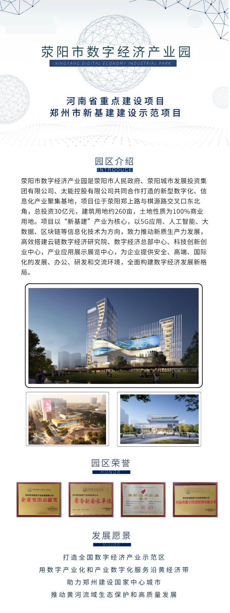

2026年5月14日，济南爽朗信息科技有限公司与荥阳市数字经济产业园以线上会议形式召开合作洽谈会，聚焦数字技术赋能、产业生态共建等核心议题。济南爽朗信息科技有限公司客户经理刘乐、荥阳市数字经济产业园招商经理韩姗出席会议，双方就资源互补、业务协同、数字化升级等方向达成共识，为后续深度合作奠定坚实基础。
会议伊始，济南爽朗信息科技有限公司客户经理刘乐详细介绍了企业核心优势与战略布局。济南爽朗信息科技有限公司深耕信息技术服务领域，是一家专注于人工智能应用研发、大数据技术服务、信息系统集成、数字化解决方案输出的专业化科技企业。公司依托高素质技术研发团队与成熟的技术体系，在技术创新、成果转化、行业场景落地等方面积累了丰富实践经验，具备为全行业提供定制化数字化转型服务的核心能力，致力于以技术驱动产业提质增效，助力企业数字化、智能化升级。
荥阳市数字经济产业园招商经理韩姗全面介绍了园区发展定位、产业生态与服务体系。园区作为区域数字经济发展的核心载体，正全力推进数字化、智能化建设，着力打造信息化配套完善、资源要素集聚、产业生态完备的综合性数字产业高地。园区构建了全周期企业服务体系，通过搭建产业资源共享平台、举办行业交流活动、精准对接政策扶持资源等举措，高效推动企业资源互通和产业链协同联动，为企业发展提供优质营商环境与强劲支撑。
此次洽谈进一步加深了双方互信与了解，拓宽了合作空间。未来，荥阳市数字经济产业园将持续优化服务效能，积极引进优质资源，以资源对接为抓手，推动双方资源精准匹配，助力区域数字经济高质量发展。
编辑：王明慧 | 责编：韩姗


